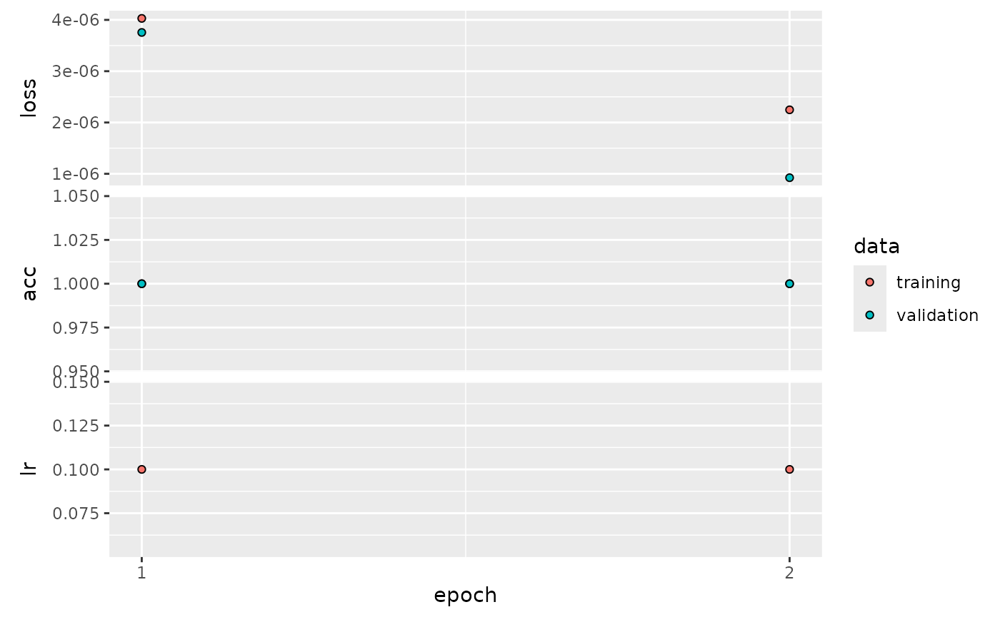

The deepG library offers several options to extract input/target pairs from data. We can differentiate between to main approach:
- Language model: predict a character or several characters in a sequence.
- Label Classification: map a label to a sequence.
Language model
With language model, we mean a model that predicts a character in a
sequence. We have several options to determine the output format of the
data generator using the output_format argument.
The output_format determines the shape of the output for
a language model, i.e. part of a sequence is the input \(X\) and another the target \(Y\). Assume a sequence abcdefg and
maxlen = 6. Output correspond as follows
“target_right”: \(X=\) abcdef, \(Y=\) g
“target_middle_lstm”: \(X =\) (\(X_1 =\) abc, \(X_2 =\) gfe), \(Y=\) d (note reversed order of \(X_2\))
“target_middle_cnn”: \(X =\) abcefg, \(Y =\) d
“wavenet”: \(X =\) abcdef, \(Y =\) bcdefg
Create dummy data
To test the different language model options, we create a simple dummy data set consisting of a repetition of the sequence AAACCCGGGTTTAAACCC….
vocabulary <- c("A", "C", "G", "T")
base_seq <- "AAACCCGGGTTT"
full_seq <- strrep(base_seq, 50)
df <- data.frame(Header = "header", Sequence = full_seq)
# create training fasta file
train_dir <- tempfile()
dir.create(train_dir)
microseq::writeFasta(df, file.path(train_dir, "train_1.fasta"))
# create validation fasta file (use same data as training)
val_dir <- tempfile()
dir.create(val_dir)
microseq::writeFasta(df, file.path(val_dir, "val_1.fasta"))Predict next character
Say we want to predict the next character in a sequence given the last 5 characters and our text consists of the letters A,C,G,T . First we have to create a model. We may use a model with 1 LSTM and 1 dense layer for predictions.
model <- create_model_lstm_cnn(
maxlen = 5,
layer_lstm = c(8),
layer_dense = c(4),
learning_rate = 0.1,
vocabulary_size = 4 # text consists of A,C,G,T
)## Model: "model"
## _________________________________________________________________
## Layer (type) Output Shape Param #
## =================================================================
## input_1 (InputLayer) [(None, 5, 4)] 0
##
## lstm (LSTM) (None, 8) 416
##
## dense (Dense) (None, 4) 36
##
## =================================================================
## Total params: 452 (1.77 KB)
## Trainable params: 452 (1.77 KB)
## Non-trainable params: 0 (0.00 Byte)
## _________________________________________________________________Next we have to specify the location of our training and validation data and the output format of the data generator
hist <- train_model(train_type = "lm", # running a language model
output_format = "target_right", # predict target at end of sequence
model = model,
path = train_dir,
path_val = val_dir,
steps_per_epoch = 5, # use 5 batches per epoch
train_val_ratio = 0.2, # use 20% of samples for validation compared to train
batch_size = 16,
epochs = 4)## Epoch 1/4
## 1/5 [=====>........................] - ETA: 3s - loss: 1.4107 - acc: 0.0000e+005/5 [==============================] - 1s 68ms/step - loss: 0.9583 - acc: 0.6250 - val_loss: 0.5406 - val_acc: 0.8125 - lr: 0.1000
## Epoch 2/4
## 1/5 [=====>........................] - ETA: 0s - loss: 0.5299 - acc: 0.81255/5 [==============================] - 0s 19ms/step - loss: 0.3242 - acc: 0.9250 - val_loss: 0.2099 - val_acc: 1.0000 - lr: 0.1000
## Epoch 3/4
## 1/5 [=====>........................] - ETA: 0s - loss: 0.1526 - acc: 1.00005/5 [==============================] - 0s 18ms/step - loss: 0.0951 - acc: 1.0000 - val_loss: 0.0468 - val_acc: 1.0000 - lr: 0.1000
## Epoch 4/4
## 1/5 [=====>........................] - ETA: 0s - loss: 0.0492 - acc: 1.00005/5 [==============================] - 0s 16ms/step - loss: 0.0227 - acc: 1.0000 - val_loss: 0.0118 - val_acc: 1.0000 - lr: 0.1000
plot(hist)
Predict character in middle of sequence
If we want to predict a character in the middle of a sequence and use LSTM layers, we should split our input into two layers. One layer handles the sequence before and one the input after the target. If, for example
sequence: ACCGTGGAA
then first input corresponds to ACCG and second to
AAGG. We may create a model with two input layers using the
create_model_cnn_lstm_target_middle
model <- create_model_lstm_cnn_target_middle(
maxlen = 5,
layer_lstm = c(8),
layer_dense = c(4),
learning_rate = 0.1,
vocabulary_size = 4
)## Model: "model_1"
## __________________________________________________________________________________________________
## Layer (type) Output Shape Param # Connected to
## ==================================================================================================
## input_2 (InputLayer) [(None, 3, 4)] 0 []
##
## input_3 (InputLayer) [(None, 2, 4)] 0 []
##
## lstm_1 (LSTM) (None, 8) 416 ['input_2[0][0]']
##
## lstm_2 (LSTM) (None, 8) 416 ['input_3[0][0]']
##
## concatenate (Concatenate) (None, 16) 0 ['lstm_1[0][0]',
## 'lstm_2[0][0]']
##
## dense_1 (Dense) (None, 4) 68 ['concatenate[0][0]']
##
## ==================================================================================================
## Total params: 900 (3.52 KB)
## Trainable params: 900 (3.52 KB)
## Non-trainable params: 0 (0.00 Byte)
## __________________________________________________________________________________________________The train_model call is identical to the previous model,
except we have to change the output format of the generator by setting
output_format = "target_middle_lstm". This reverses the
order of the sequence after the target.
hist <- train_model(train_type = "lm", # running a language model
output_format = "target_middle_lstm", # predict target in middle of sequence
model = model,
path = train_dir,
path_val = val_dir,
steps_per_epoch = 5, # use 5 batches per epoch
train_val_ratio = 0.2, # use 20% of samples for validation compared to train
batch_size = 16,
epochs = 4)## Epoch 1/4
## 1/5 [=====>........................] - ETA: 5s - loss: 1.4632 - acc: 0.06255/5 [==============================] - 2s 91ms/step - loss: 1.1035 - acc: 0.5500 - val_loss: 0.4754 - val_acc: 1.0000 - lr: 0.1000
## Epoch 2/4
## 1/5 [=====>........................] - ETA: 0s - loss: 0.4924 - acc: 1.00005/5 [==============================] - 0s 18ms/step - loss: 0.2559 - acc: 1.0000 - val_loss: 0.0588 - val_acc: 1.0000 - lr: 0.1000
## Epoch 3/4
## 1/5 [=====>........................] - ETA: 0s - loss: 0.0708 - acc: 1.00003/5 [=================>............] - ETA: 0s - loss: 0.0409 - acc: 1.00005/5 [==============================] - 0s 28ms/step - loss: 0.0283 - acc: 1.0000 - val_loss: 0.0060 - val_acc: 1.0000 - lr: 0.1000
## Epoch 4/4
## 1/5 [=====>........................] - ETA: 0s - loss: 0.0046 - acc: 1.00005/5 [==============================] - 0s 19ms/step - loss: 0.0024 - acc: 1.0000 - val_loss: 8.7273e-04 - val_acc: 1.0000 - lr: 0.1000
plot(hist)
Masked language model
Here we mask some parts of the input sequence and the model tries to predict the masked regions. Can be used for training BERT-like models. See also this notebook. We can first check how the generator works.
# create dummy training data
nt_seq <- rep(c("A", "C", "G", "T"), each = 25) %>% paste(collapse = "") %>% strrep(10)
df <- data.frame(Sequence = nt_seq, Header = "seq_1")
fasta_path <- tempfile(fileext = ".fasta")
fasta_file <- microseq::writeFasta(df, fasta_path)
masked_lm <- list(mask_rate = 0.10, # replace 10% of input with special mask token
random_rate = 0.03, # set 3% of input to random value
identity_rate = 0.02, # leave 2% unchanged (and set sample weight to 1)
include_sw = TRUE) # 0,1 matrix showing where masking was applied
gen <- get_generator(path = fasta_path,
train_type = "masked_lm",
masked_lm = masked_lm,
batch_size = 1,
n_gram = 1,
n_gram_stride = 1,
return_int = TRUE,
maxlen = 100,
vocabulary = c("A", "C", "G", "T"))
z <- gen()
x <- z[[1]]
y <- z[[2]]
sw <- z[[3]]
df <- data.frame(x = x[1, ], y = y[1, ], sw = sw[1, ])
print(head(df), 10)## x y sw
## 1 5 1 1
## 2 1 1 0
## 3 1 1 0
## 4 1 1 0
## 5 1 1 0
## 6 1 1 0
print(df[ df$sw == 1, ])## x y sw
## 1 5 1 1
## 7 5 1 1
## 14 5 1 1
## 21 1 1 1
## 34 5 2 1
## 43 2 2 1
## 51 4 3 1
## 54 5 3 1
## 59 3 3 1
## 73 5 3 1
## 74 5 3 1
## 79 5 4 1
## 82 5 4 1
## 85 5 4 1
## 87 2 4 1Create the model architecture.
model <- create_model_transformer(
maxlen = 100,
vocabulary_size = 6,
embed_dim = 16,
ff_dim = 32,
pos_encoding = "embedding",
head_size = 20,
num_heads = 4,
layer_dense = 6,
flatten_method = "none",
last_layer_activation = "softmax",
loss_fn = "sparse_categorical_crossentropy",
solver = "adam",
learning_rate = 0.005
)## Model: "model_2"
## ________________________________________________________________________________
## Layer (type) Output Shape Param #
## ================================================================================
## input_4 (InputLayer) [(None, 100)] 0
## layer_pos_embedding (layer_pos_em (None, 100, 16) 1696
## bedding)
## layer_transformer_block (layer_tr (None, 100, 16) 6512
## ansformer_block)
## dense_4 (Dense) (None, 100, 6) 102
## ================================================================================
## Total params: 8310 (32.46 KB)
## Trainable params: 8310 (32.46 KB)
## Non-trainable params: 0 (0.00 Byte)
## ________________________________________________________________________________Train the model.
batch_size <- 128
masked_lm <- list(mask_rate = 0.10, random_rate = 0.03, identity_rate = 0.02, include_sw = TRUE)
hist <- train_model(model = model,
# training args
run_name = "bert_1",
epochs = 8,
steps_per_epoch = 75,
# generator args
maxlen = 100,
train_type = "masked_lm",
path = fasta_path,
path_val = NULL,
batch_size = batch_size,
step = 25,
masked_lm = masked_lm,
proportion_per_seq = 0.97,
return_int = TRUE)## Epoch 1/8
## 1/75 [..............................] - ETA: 1:03 - loss: 0.3593 - acc: 0.0827 2/75 [..............................] - ETA: 3s - loss: 0.3057 - acc: 0.1099 3/75 [>.............................] - ETA: 4s - loss: 0.2775 - acc: 0.1441 4/75 [>.............................] - ETA: 3s - loss: 0.2626 - acc: 0.2068 5/75 [=>............................] - ETA: 3s - loss: 0.2530 - acc: 0.2856 6/75 [=>............................] - ETA: 3s - loss: 0.2458 - acc: 0.3483 7/75 [=>............................] - ETA: 3s - loss: 0.2401 - acc: 0.3960 8/75 [==>...........................] - ETA: 3s - loss: 0.2357 - acc: 0.439310/75 [===>..........................] - ETA: 3s - loss: 0.2295 - acc: 0.521811/75 [===>..........................] - ETA: 3s - loss: 0.2272 - acc: 0.556212/75 [===>..........................] - ETA: 3s - loss: 0.2254 - acc: 0.585113/75 [====>.........................] - ETA: 3s - loss: 0.2239 - acc: 0.608314/75 [====>.........................] - ETA: 3s - loss: 0.2225 - acc: 0.628715/75 [=====>........................] - ETA: 3s - loss: 0.2213 - acc: 0.646816/75 [=====>........................] - ETA: 3s - loss: 0.2202 - acc: 0.662717/75 [=====>........................] - ETA: 3s - loss: 0.2191 - acc: 0.676719/75 [======>.......................] - ETA: 2s - loss: 0.2176 - acc: 0.700320/75 [=======>......................] - ETA: 2s - loss: 0.2168 - acc: 0.710521/75 [=======>......................] - ETA: 2s - loss: 0.2159 - acc: 0.719722/75 [=======>......................] - ETA: 2s - loss: 0.2152 - acc: 0.727923/75 [========>.....................] - ETA: 2s - loss: 0.2144 - acc: 0.735725/75 [=========>....................] - ETA: 2s - loss: 0.2132 - acc: 0.749126/75 [=========>....................] - ETA: 2s - loss: 0.2127 - acc: 0.755027/75 [=========>....................] - ETA: 2s - loss: 0.2123 - acc: 0.760528/75 [==========>...................] - ETA: 2s - loss: 0.2118 - acc: 0.765429/75 [==========>...................] - ETA: 2s - loss: 0.2113 - acc: 0.770230/75 [===========>..................] - ETA: 2s - loss: 0.2111 - acc: 0.774531/75 [===========>..................] - ETA: 2s - loss: 0.2108 - acc: 0.778632/75 [===========>..................] - ETA: 2s - loss: 0.2104 - acc: 0.782533/75 [============>.................] - ETA: 2s - loss: 0.2100 - acc: 0.786134/75 [============>.................] - ETA: 2s - loss: 0.2097 - acc: 0.789535/75 [=============>................] - ETA: 2s - loss: 0.2093 - acc: 0.792736/75 [=============>................] - ETA: 2s - loss: 0.2089 - acc: 0.795937/75 [=============>................] - ETA: 2s - loss: 0.2088 - acc: 0.798738/75 [==============>...............] - ETA: 1s - loss: 0.2086 - acc: 0.801439/75 [==============>...............] - ETA: 1s - loss: 0.2084 - acc: 0.804140/75 [===============>..............] - ETA: 1s - loss: 0.2080 - acc: 0.806641/75 [===============>..............] - ETA: 1s - loss: 0.2078 - acc: 0.808942/75 [===============>..............] - ETA: 1s - loss: 0.2076 - acc: 0.811243/75 [================>.............] - ETA: 1s - loss: 0.2075 - acc: 0.813344/75 [================>.............] - ETA: 1s - loss: 0.2073 - acc: 0.815345/75 [=================>............] - ETA: 1s - loss: 0.2070 - acc: 0.817346/75 [=================>............] - ETA: 1s - loss: 0.2068 - acc: 0.819348/75 [==================>...........] - ETA: 1s - loss: 0.2064 - acc: 0.822849/75 [==================>...........] - ETA: 1s - loss: 0.2063 - acc: 0.824450/75 [===================>..........] - ETA: 1s - loss: 0.2062 - acc: 0.826051/75 [===================>..........] - ETA: 1s - loss: 0.2060 - acc: 0.827652/75 [===================>..........] - ETA: 1s - loss: 0.2059 - acc: 0.829053/75 [====================>.........] - ETA: 1s - loss: 0.2058 - acc: 0.830454/75 [====================>.........] - ETA: 1s - loss: 0.2055 - acc: 0.831855/75 [=====================>........] - ETA: 1s - loss: 0.2054 - acc: 0.833156/75 [=====================>........] - ETA: 1s - loss: 0.2052 - acc: 0.834457/75 [=====================>........] - ETA: 0s - loss: 0.2051 - acc: 0.835758/75 [======================>.......] - ETA: 0s - loss: 0.2049 - acc: 0.836959/75 [======================>.......] - ETA: 0s - loss: 0.2047 - acc: 0.838160/75 [=======================>......] - ETA: 0s - loss: 0.2046 - acc: 0.839261/75 [=======================>......] - ETA: 0s - loss: 0.2045 - acc: 0.840262/75 [=======================>......] - ETA: 0s - loss: 0.2043 - acc: 0.841363/75 [========================>.....] - ETA: 0s - loss: 0.2042 - acc: 0.842464/75 [========================>.....] - ETA: 0s - loss: 0.2041 - acc: 0.843365/75 [=========================>....] - ETA: 0s - loss: 0.2041 - acc: 0.844266/75 [=========================>....] - ETA: 0s - loss: 0.2041 - acc: 0.845167/75 [=========================>....] - ETA: 0s - loss: 0.2040 - acc: 0.845968/75 [==========================>...] - ETA: 0s - loss: 0.2040 - acc: 0.846869/75 [==========================>...] - ETA: 0s - loss: 0.2039 - acc: 0.847670/75 [===========================>..] - ETA: 0s - loss: 0.2038 - acc: 0.848471/75 [===========================>..] - ETA: 0s - loss: 0.2038 - acc: 0.849172/75 [===========================>..] - ETA: 0s - loss: 0.2037 - acc: 0.849973/75 [============================>.] - ETA: 0s - loss: 0.2036 - acc: 0.850674/75 [============================>.] - ETA: 0s - loss: 0.2035 - acc: 0.851475/75 [==============================] - ETA: 0s - loss: 0.2035 - acc: 0.852075/75 [==============================] - 5s 53ms/step - loss: 0.2035 - acc: 0.8520 - lr: 0.0050
## Epoch 2/8
## 1/75 [..............................] - ETA: 3s - loss: 0.1949 - acc: 0.9049 2/75 [..............................] - ETA: 3s - loss: 0.1971 - acc: 0.9042 3/75 [>.............................] - ETA: 4s - loss: 0.1968 - acc: 0.9055 4/75 [>.............................] - ETA: 4s - loss: 0.1972 - acc: 0.9049 5/75 [=>............................] - ETA: 3s - loss: 0.1978 - acc: 0.9047 6/75 [=>............................] - ETA: 3s - loss: 0.1967 - acc: 0.9055 8/75 [==>...........................] - ETA: 3s - loss: 0.1971 - acc: 0.9054 9/75 [==>...........................] - ETA: 3s - loss: 0.1970 - acc: 0.905510/75 [===>..........................] - ETA: 3s - loss: 0.1972 - acc: 0.905411/75 [===>..........................] - ETA: 3s - loss: 0.1971 - acc: 0.905512/75 [===>..........................] - ETA: 3s - loss: 0.1968 - acc: 0.905713/75 [====>.........................] - ETA: 3s - loss: 0.1970 - acc: 0.905614/75 [====>.........................] - ETA: 3s - loss: 0.1972 - acc: 0.905115/75 [=====>........................] - ETA: 3s - loss: 0.1972 - acc: 0.905216/75 [=====>........................] - ETA: 3s - loss: 0.1972 - acc: 0.905117/75 [=====>........................] - ETA: 3s - loss: 0.1972 - acc: 0.905318/75 [======>.......................] - ETA: 3s - loss: 0.1971 - acc: 0.905419/75 [======>.......................] - ETA: 3s - loss: 0.1972 - acc: 0.905420/75 [=======>......................] - ETA: 2s - loss: 0.1970 - acc: 0.905521/75 [=======>......................] - ETA: 2s - loss: 0.1972 - acc: 0.905523/75 [========>.....................] - ETA: 2s - loss: 0.1968 - acc: 0.905724/75 [========>.....................] - ETA: 2s - loss: 0.1968 - acc: 0.905725/75 [=========>....................] - ETA: 2s - loss: 0.1966 - acc: 0.906026/75 [=========>....................] - ETA: 2s - loss: 0.1967 - acc: 0.906127/75 [=========>....................] - ETA: 2s - loss: 0.1966 - acc: 0.906128/75 [==========>...................] - ETA: 2s - loss: 0.1968 - acc: 0.906029/75 [==========>...................] - ETA: 2s - loss: 0.1967 - acc: 0.906230/75 [===========>..................] - ETA: 2s - loss: 0.1966 - acc: 0.906231/75 [===========>..................] - ETA: 2s - loss: 0.1964 - acc: 0.906332/75 [===========>..................] - ETA: 2s - loss: 0.1966 - acc: 0.906333/75 [============>.................] - ETA: 2s - loss: 0.1968 - acc: 0.906134/75 [============>.................] - ETA: 2s - loss: 0.1967 - acc: 0.906135/75 [=============>................] - ETA: 2s - loss: 0.1967 - acc: 0.906236/75 [=============>................] - ETA: 2s - loss: 0.1967 - acc: 0.906237/75 [=============>................] - ETA: 2s - loss: 0.1967 - acc: 0.906238/75 [==============>...............] - ETA: 2s - loss: 0.1968 - acc: 0.906139/75 [==============>...............] - ETA: 2s - loss: 0.1969 - acc: 0.906140/75 [===============>..............] - ETA: 1s - loss: 0.1970 - acc: 0.906141/75 [===============>..............] - ETA: 1s - loss: 0.1969 - acc: 0.906142/75 [===============>..............] - ETA: 1s - loss: 0.1969 - acc: 0.906243/75 [================>.............] - ETA: 1s - loss: 0.1969 - acc: 0.906244/75 [================>.............] - ETA: 1s - loss: 0.1968 - acc: 0.906245/75 [=================>............] - ETA: 1s - loss: 0.1969 - acc: 0.906146/75 [=================>............] - ETA: 1s - loss: 0.1968 - acc: 0.906247/75 [=================>............] - ETA: 1s - loss: 0.1969 - acc: 0.906148/75 [==================>...........] - ETA: 1s - loss: 0.1968 - acc: 0.906249/75 [==================>...........] - ETA: 1s - loss: 0.1969 - acc: 0.906250/75 [===================>..........] - ETA: 1s - loss: 0.1969 - acc: 0.906351/75 [===================>..........] - ETA: 1s - loss: 0.1968 - acc: 0.906352/75 [===================>..........] - ETA: 1s - loss: 0.1969 - acc: 0.906353/75 [====================>.........] - ETA: 1s - loss: 0.1969 - acc: 0.906354/75 [====================>.........] - ETA: 1s - loss: 0.1970 - acc: 0.906255/75 [=====================>........] - ETA: 1s - loss: 0.1970 - acc: 0.906256/75 [=====================>........] - ETA: 1s - loss: 0.1969 - acc: 0.906257/75 [=====================>........] - ETA: 1s - loss: 0.1968 - acc: 0.906458/75 [======================>.......] - ETA: 0s - loss: 0.1968 - acc: 0.906459/75 [======================>.......] - ETA: 0s - loss: 0.1969 - acc: 0.906460/75 [=======================>......] - ETA: 0s - loss: 0.1969 - acc: 0.906461/75 [=======================>......] - ETA: 0s - loss: 0.1969 - acc: 0.906462/75 [=======================>......] - ETA: 0s - loss: 0.1969 - acc: 0.906563/75 [========================>.....] - ETA: 0s - loss: 0.1968 - acc: 0.906664/75 [========================>.....] - ETA: 0s - loss: 0.1967 - acc: 0.906665/75 [=========================>....] - ETA: 0s - loss: 0.1967 - acc: 0.906666/75 [=========================>....] - ETA: 0s - loss: 0.1967 - acc: 0.906667/75 [=========================>....] - ETA: 0s - loss: 0.1967 - acc: 0.906668/75 [==========================>...] - ETA: 0s - loss: 0.1967 - acc: 0.906769/75 [==========================>...] - ETA: 0s - loss: 0.1966 - acc: 0.906870/75 [===========================>..] - ETA: 0s - loss: 0.1965 - acc: 0.906871/75 [===========================>..] - ETA: 0s - loss: 0.1965 - acc: 0.906872/75 [===========================>..] - ETA: 0s - loss: 0.1965 - acc: 0.906873/75 [============================>.] - ETA: 0s - loss: 0.1965 - acc: 0.906874/75 [============================>.] - ETA: 0s - loss: 0.1965 - acc: 0.906975/75 [==============================] - ETA: 0s - loss: 0.1964 - acc: 0.906975/75 [==============================] - 4s 56ms/step - loss: 0.1964 - acc: 0.9069 - lr: 0.0050
## Epoch 3/8
## 1/75 [..............................] - ETA: 3s - loss: 0.1932 - acc: 0.9089 2/75 [..............................] - ETA: 3s - loss: 0.1933 - acc: 0.9102 3/75 [>.............................] - ETA: 3s - loss: 0.1938 - acc: 0.9103 4/75 [>.............................] - ETA: 3s - loss: 0.1953 - acc: 0.9094 5/75 [=>............................] - ETA: 3s - loss: 0.1939 - acc: 0.9084 6/75 [=>............................] - ETA: 3s - loss: 0.1938 - acc: 0.9084 7/75 [=>............................] - ETA: 3s - loss: 0.1929 - acc: 0.9087 8/75 [==>...........................] - ETA: 3s - loss: 0.1926 - acc: 0.9081 9/75 [==>...........................] - ETA: 3s - loss: 0.1927 - acc: 0.908310/75 [===>..........................] - ETA: 3s - loss: 0.1928 - acc: 0.908011/75 [===>..........................] - ETA: 3s - loss: 0.1928 - acc: 0.906512/75 [===>..........................] - ETA: 3s - loss: 0.1928 - acc: 0.906213/75 [====>.........................] - ETA: 3s - loss: 0.1931 - acc: 0.904114/75 [====>.........................] - ETA: 3s - loss: 0.1930 - acc: 0.904615/75 [=====>........................] - ETA: 3s - loss: 0.1930 - acc: 0.904016/75 [=====>........................] - ETA: 3s - loss: 0.1931 - acc: 0.904218/75 [======>.......................] - ETA: 2s - loss: 0.1933 - acc: 0.903519/75 [======>.......................] - ETA: 2s - loss: 0.1933 - acc: 0.902920/75 [=======>......................] - ETA: 2s - loss: 0.1932 - acc: 0.902621/75 [=======>......................] - ETA: 2s - loss: 0.1930 - acc: 0.903023/75 [========>.....................] - ETA: 2s - loss: 0.1928 - acc: 0.903124/75 [========>.....................] - ETA: 2s - loss: 0.1926 - acc: 0.903725/75 [=========>....................] - ETA: 2s - loss: 0.1927 - acc: 0.903826/75 [=========>....................] - ETA: 2s - loss: 0.1927 - acc: 0.903727/75 [=========>....................] - ETA: 2s - loss: 0.1924 - acc: 0.903928/75 [==========>...................] - ETA: 2s - loss: 0.1924 - acc: 0.904129/75 [==========>...................] - ETA: 2s - loss: 0.1925 - acc: 0.904330/75 [===========>..................] - ETA: 2s - loss: 0.1924 - acc: 0.904732/75 [===========>..................] - ETA: 2s - loss: 0.1923 - acc: 0.905033/75 [============>.................] - ETA: 2s - loss: 0.1923 - acc: 0.905235/75 [=============>................] - ETA: 2s - loss: 0.1922 - acc: 0.905636/75 [=============>................] - ETA: 2s - loss: 0.1922 - acc: 0.905737/75 [=============>................] - ETA: 2s - loss: 0.1921 - acc: 0.905938/75 [==============>...............] - ETA: 1s - loss: 0.1920 - acc: 0.906139/75 [==============>...............] - ETA: 1s - loss: 0.1920 - acc: 0.906240/75 [===============>..............] - ETA: 1s - loss: 0.1920 - acc: 0.906341/75 [===============>..............] - ETA: 1s - loss: 0.1920 - acc: 0.906342/75 [===============>..............] - ETA: 1s - loss: 0.1919 - acc: 0.906443/75 [================>.............] - ETA: 1s - loss: 0.1918 - acc: 0.906644/75 [================>.............] - ETA: 1s - loss: 0.1917 - acc: 0.906745/75 [=================>............] - ETA: 1s - loss: 0.1915 - acc: 0.906646/75 [=================>............] - ETA: 1s - loss: 0.1914 - acc: 0.906647/75 [=================>............] - ETA: 1s - loss: 0.1912 - acc: 0.906748/75 [==================>...........] - ETA: 1s - loss: 0.1910 - acc: 0.906849/75 [==================>...........] - ETA: 1s - loss: 0.1908 - acc: 0.906950/75 [===================>..........] - ETA: 1s - loss: 0.1906 - acc: 0.906951/75 [===================>..........] - ETA: 1s - loss: 0.1901 - acc: 0.906752/75 [===================>..........] - ETA: 1s - loss: 0.1899 - acc: 0.906553/75 [====================>.........] - ETA: 1s - loss: 0.1895 - acc: 0.906254/75 [====================>.........] - ETA: 1s - loss: 0.1890 - acc: 0.905756/75 [=====================>........] - ETA: 1s - loss: 0.1879 - acc: 0.904757/75 [=====================>........] - ETA: 0s - loss: 0.1873 - acc: 0.903858/75 [======================>.......] - ETA: 0s - loss: 0.1867 - acc: 0.903159/75 [======================>.......] - ETA: 0s - loss: 0.1860 - acc: 0.902161/75 [=======================>......] - ETA: 0s - loss: 0.1847 - acc: 0.899862/75 [=======================>......] - ETA: 0s - loss: 0.1838 - acc: 0.900063/75 [========================>.....] - ETA: 0s - loss: 0.1829 - acc: 0.899964/75 [========================>.....] - ETA: 0s - loss: 0.1821 - acc: 0.899465/75 [=========================>....] - ETA: 0s - loss: 0.1813 - acc: 0.899066/75 [=========================>....] - ETA: 0s - loss: 0.1805 - acc: 0.898867/75 [=========================>....] - ETA: 0s - loss: 0.1795 - acc: 0.899168/75 [==========================>...] - ETA: 0s - loss: 0.1785 - acc: 0.899369/75 [==========================>...] - ETA: 0s - loss: 0.1776 - acc: 0.899370/75 [===========================>..] - ETA: 0s - loss: 0.1765 - acc: 0.899771/75 [===========================>..] - ETA: 0s - loss: 0.1754 - acc: 0.899572/75 [===========================>..] - ETA: 0s - loss: 0.1742 - acc: 0.899973/75 [============================>.] - ETA: 0s - loss: 0.1729 - acc: 0.900474/75 [============================>.] - ETA: 0s - loss: 0.1716 - acc: 0.900875/75 [==============================] - ETA: 0s - loss: 0.1702 - acc: 0.901575/75 [==============================] - 4s 53ms/step - loss: 0.1702 - acc: 0.9015 - lr: 0.0050
## Epoch 4/8
## 1/75 [..............................] - ETA: 3s - loss: 0.0564 - acc: 0.9556 2/75 [..............................] - ETA: 3s - loss: 0.0526 - acc: 0.9627 4/75 [>.............................] - ETA: 3s - loss: 0.0499 - acc: 0.9654 5/75 [=>............................] - ETA: 3s - loss: 0.0489 - acc: 0.9657 6/75 [=>............................] - ETA: 3s - loss: 0.0488 - acc: 0.9625 7/75 [=>............................] - ETA: 3s - loss: 0.0470 - acc: 0.9627 8/75 [==>...........................] - ETA: 3s - loss: 0.0460 - acc: 0.9619 9/75 [==>...........................] - ETA: 3s - loss: 0.0454 - acc: 0.961310/75 [===>..........................] - ETA: 3s - loss: 0.0446 - acc: 0.961211/75 [===>..........................] - ETA: 3s - loss: 0.0432 - acc: 0.961913/75 [====>.........................] - ETA: 3s - loss: 0.0409 - acc: 0.963814/75 [====>.........................] - ETA: 3s - loss: 0.0398 - acc: 0.965115/75 [=====>........................] - ETA: 3s - loss: 0.0386 - acc: 0.966616/75 [=====>........................] - ETA: 3s - loss: 0.0381 - acc: 0.966917/75 [=====>........................] - ETA: 3s - loss: 0.0372 - acc: 0.967618/75 [======>.......................] - ETA: 2s - loss: 0.0365 - acc: 0.967919/75 [======>.......................] - ETA: 2s - loss: 0.0357 - acc: 0.968320/75 [=======>......................] - ETA: 2s - loss: 0.0355 - acc: 0.967921/75 [=======>......................] - ETA: 2s - loss: 0.0351 - acc: 0.968022/75 [=======>......................] - ETA: 2s - loss: 0.0346 - acc: 0.968124/75 [========>.....................] - ETA: 2s - loss: 0.0334 - acc: 0.968425/75 [=========>....................] - ETA: 2s - loss: 0.0330 - acc: 0.968727/75 [=========>....................] - ETA: 2s - loss: 0.0321 - acc: 0.969428/75 [==========>...................] - ETA: 2s - loss: 0.0318 - acc: 0.969429/75 [==========>...................] - ETA: 2s - loss: 0.0315 - acc: 0.969630/75 [===========>..................] - ETA: 2s - loss: 0.0311 - acc: 0.969831/75 [===========>..................] - ETA: 2s - loss: 0.0307 - acc: 0.970332/75 [===========>..................] - ETA: 2s - loss: 0.0303 - acc: 0.970733/75 [============>.................] - ETA: 2s - loss: 0.0300 - acc: 0.970734/75 [============>.................] - ETA: 2s - loss: 0.0298 - acc: 0.970935/75 [=============>................] - ETA: 2s - loss: 0.0295 - acc: 0.971336/75 [=============>................] - ETA: 2s - loss: 0.0291 - acc: 0.971637/75 [=============>................] - ETA: 2s - loss: 0.0289 - acc: 0.971739/75 [==============>...............] - ETA: 1s - loss: 0.0284 - acc: 0.971840/75 [===============>..............] - ETA: 1s - loss: 0.0281 - acc: 0.972141/75 [===============>..............] - ETA: 1s - loss: 0.0277 - acc: 0.972442/75 [===============>..............] - ETA: 1s - loss: 0.0275 - acc: 0.972543/75 [================>.............] - ETA: 1s - loss: 0.0273 - acc: 0.972744/75 [================>.............] - ETA: 1s - loss: 0.0270 - acc: 0.972945/75 [=================>............] - ETA: 1s - loss: 0.0268 - acc: 0.972946/75 [=================>............] - ETA: 1s - loss: 0.0267 - acc: 0.972947/75 [=================>............] - ETA: 1s - loss: 0.0265 - acc: 0.972948/75 [==================>...........] - ETA: 1s - loss: 0.0263 - acc: 0.973149/75 [==================>...........] - ETA: 1s - loss: 0.0262 - acc: 0.973050/75 [===================>..........] - ETA: 1s - loss: 0.0260 - acc: 0.973151/75 [===================>..........] - ETA: 1s - loss: 0.0258 - acc: 0.973352/75 [===================>..........] - ETA: 1s - loss: 0.0257 - acc: 0.973453/75 [====================>.........] - ETA: 1s - loss: 0.0255 - acc: 0.973554/75 [====================>.........] - ETA: 1s - loss: 0.0254 - acc: 0.973855/75 [=====================>........] - ETA: 1s - loss: 0.0251 - acc: 0.974056/75 [=====================>........] - ETA: 1s - loss: 0.0250 - acc: 0.974157/75 [=====================>........] - ETA: 0s - loss: 0.0248 - acc: 0.974258/75 [======================>.......] - ETA: 0s - loss: 0.0247 - acc: 0.974359/75 [======================>.......] - ETA: 0s - loss: 0.0244 - acc: 0.974660/75 [=======================>......] - ETA: 0s - loss: 0.0244 - acc: 0.974461/75 [=======================>......] - ETA: 0s - loss: 0.0243 - acc: 0.974562/75 [=======================>......] - ETA: 0s - loss: 0.0242 - acc: 0.974463/75 [========================>.....] - ETA: 0s - loss: 0.0241 - acc: 0.974764/75 [========================>.....] - ETA: 0s - loss: 0.0240 - acc: 0.974865/75 [=========================>....] - ETA: 0s - loss: 0.0238 - acc: 0.975066/75 [=========================>....] - ETA: 0s - loss: 0.0237 - acc: 0.975268/75 [==========================>...] - ETA: 0s - loss: 0.0234 - acc: 0.975369/75 [==========================>...] - ETA: 0s - loss: 0.0233 - acc: 0.975470/75 [===========================>..] - ETA: 0s - loss: 0.0233 - acc: 0.975471/75 [===========================>..] - ETA: 0s - loss: 0.0231 - acc: 0.975572/75 [===========================>..] - ETA: 0s - loss: 0.0231 - acc: 0.975673/75 [============================>.] - ETA: 0s - loss: 0.0230 - acc: 0.975674/75 [============================>.] - ETA: 0s - loss: 0.0229 - acc: 0.975675/75 [==============================] - ETA: 0s - loss: 0.0228 - acc: 0.975875/75 [==============================] - 4s 54ms/step - loss: 0.0228 - acc: 0.9758 - lr: 0.0050
## Epoch 5/8
## 1/75 [..............................] - ETA: 3s - loss: 0.0172 - acc: 0.9823 2/75 [..............................] - ETA: 3s - loss: 0.0159 - acc: 0.9858 3/75 [>.............................] - ETA: 3s - loss: 0.0147 - acc: 0.9858 4/75 [>.............................] - ETA: 3s - loss: 0.0145 - acc: 0.9841 5/75 [=>............................] - ETA: 3s - loss: 0.0156 - acc: 0.9836 6/75 [=>............................] - ETA: 3s - loss: 0.0154 - acc: 0.9837 8/75 [==>...........................] - ETA: 3s - loss: 0.0144 - acc: 0.9843 9/75 [==>...........................] - ETA: 3s - loss: 0.0148 - acc: 0.983210/75 [===>..........................] - ETA: 3s - loss: 0.0153 - acc: 0.983111/75 [===>..........................] - ETA: 3s - loss: 0.0153 - acc: 0.983113/75 [====>.........................] - ETA: 3s - loss: 0.0150 - acc: 0.983414/75 [====>.........................] - ETA: 3s - loss: 0.0150 - acc: 0.983415/75 [=====>........................] - ETA: 3s - loss: 0.0152 - acc: 0.983416/75 [=====>........................] - ETA: 3s - loss: 0.0151 - acc: 0.983617/75 [=====>........................] - ETA: 3s - loss: 0.0149 - acc: 0.984018/75 [======>.......................] - ETA: 2s - loss: 0.0148 - acc: 0.984319/75 [======>.......................] - ETA: 2s - loss: 0.0147 - acc: 0.984420/75 [=======>......................] - ETA: 2s - loss: 0.0145 - acc: 0.984621/75 [=======>......................] - ETA: 2s - loss: 0.0143 - acc: 0.984622/75 [=======>......................] - ETA: 2s - loss: 0.0142 - acc: 0.984923/75 [========>.....................] - ETA: 2s - loss: 0.0140 - acc: 0.984924/75 [========>.....................] - ETA: 2s - loss: 0.0139 - acc: 0.985125/75 [=========>....................] - ETA: 2s - loss: 0.0138 - acc: 0.985226/75 [=========>....................] - ETA: 2s - loss: 0.0137 - acc: 0.985327/75 [=========>....................] - ETA: 2s - loss: 0.0138 - acc: 0.985228/75 [==========>...................] - ETA: 2s - loss: 0.0139 - acc: 0.984929/75 [==========>...................] - ETA: 2s - loss: 0.0138 - acc: 0.985130/75 [===========>..................] - ETA: 2s - loss: 0.0139 - acc: 0.984931/75 [===========>..................] - ETA: 2s - loss: 0.0137 - acc: 0.985232/75 [===========>..................] - ETA: 2s - loss: 0.0137 - acc: 0.985233/75 [============>.................] - ETA: 2s - loss: 0.0135 - acc: 0.985434/75 [============>.................] - ETA: 2s - loss: 0.0136 - acc: 0.985335/75 [=============>................] - ETA: 2s - loss: 0.0136 - acc: 0.985236/75 [=============>................] - ETA: 2s - loss: 0.0134 - acc: 0.985337/75 [=============>................] - ETA: 1s - loss: 0.0133 - acc: 0.985538/75 [==============>...............] - ETA: 1s - loss: 0.0134 - acc: 0.985439/75 [==============>...............] - ETA: 1s - loss: 0.0133 - acc: 0.985440/75 [===============>..............] - ETA: 1s - loss: 0.0134 - acc: 0.985241/75 [===============>..............] - ETA: 1s - loss: 0.0135 - acc: 0.985042/75 [===============>..............] - ETA: 1s - loss: 0.0134 - acc: 0.985243/75 [================>.............] - ETA: 1s - loss: 0.0133 - acc: 0.985244/75 [================>.............] - ETA: 1s - loss: 0.0134 - acc: 0.985046/75 [=================>............] - ETA: 1s - loss: 0.0133 - acc: 0.985147/75 [=================>............] - ETA: 1s - loss: 0.0132 - acc: 0.985248/75 [==================>...........] - ETA: 1s - loss: 0.0132 - acc: 0.985349/75 [==================>...........] - ETA: 1s - loss: 0.0130 - acc: 0.985450/75 [===================>..........] - ETA: 1s - loss: 0.0130 - acc: 0.985551/75 [===================>..........] - ETA: 1s - loss: 0.0129 - acc: 0.985652/75 [===================>..........] - ETA: 1s - loss: 0.0131 - acc: 0.985253/75 [====================>.........] - ETA: 1s - loss: 0.0131 - acc: 0.985154/75 [====================>.........] - ETA: 1s - loss: 0.0130 - acc: 0.985255/75 [=====================>........] - ETA: 1s - loss: 0.0128 - acc: 0.985457/75 [=====================>........] - ETA: 0s - loss: 0.0127 - acc: 0.985558/75 [======================>.......] - ETA: 0s - loss: 0.0127 - acc: 0.985459/75 [======================>.......] - ETA: 0s - loss: 0.0129 - acc: 0.985260/75 [=======================>......] - ETA: 0s - loss: 0.0130 - acc: 0.985061/75 [=======================>......] - ETA: 0s - loss: 0.0130 - acc: 0.984962/75 [=======================>......] - ETA: 0s - loss: 0.0130 - acc: 0.984863/75 [========================>.....] - ETA: 0s - loss: 0.0130 - acc: 0.984964/75 [========================>.....] - ETA: 0s - loss: 0.0131 - acc: 0.984765/75 [=========================>....] - ETA: 0s - loss: 0.0133 - acc: 0.984566/75 [=========================>....] - ETA: 0s - loss: 0.0133 - acc: 0.984567/75 [=========================>....] - ETA: 0s - loss: 0.0133 - acc: 0.984469/75 [==========================>...] - ETA: 0s - loss: 0.0131 - acc: 0.984670/75 [===========================>..] - ETA: 0s - loss: 0.0133 - acc: 0.984371/75 [===========================>..] - ETA: 0s - loss: 0.0133 - acc: 0.984172/75 [===========================>..] - ETA: 0s - loss: 0.0134 - acc: 0.984173/75 [============================>.] - ETA: 0s - loss: 0.0136 - acc: 0.983875/75 [==============================] - ETA: 0s - loss: 0.0136 - acc: 0.983675/75 [==============================] - 4s 53ms/step - loss: 0.0136 - acc: 0.9836 - lr: 0.0050
## Epoch 6/8
## 1/75 [..............................] - ETA: 4s - loss: 0.0122 - acc: 0.9839 2/75 [..............................] - ETA: 3s - loss: 0.0113 - acc: 0.9844 3/75 [>.............................] - ETA: 3s - loss: 0.0120 - acc: 0.9848 4/75 [>.............................] - ETA: 3s - loss: 0.0130 - acc: 0.9832 5/75 [=>............................] - ETA: 3s - loss: 0.0119 - acc: 0.9841 6/75 [=>............................] - ETA: 3s - loss: 0.0116 - acc: 0.9852 8/75 [==>...........................] - ETA: 3s - loss: 0.0116 - acc: 0.9857 9/75 [==>...........................] - ETA: 3s - loss: 0.0118 - acc: 0.986011/75 [===>..........................] - ETA: 3s - loss: 0.0120 - acc: 0.985612/75 [===>..........................] - ETA: 3s - loss: 0.0115 - acc: 0.986213/75 [====>.........................] - ETA: 3s - loss: 0.0116 - acc: 0.986214/75 [====>.........................] - ETA: 3s - loss: 0.0115 - acc: 0.986415/75 [=====>........................] - ETA: 3s - loss: 0.0113 - acc: 0.986717/75 [=====>........................] - ETA: 3s - loss: 0.0111 - acc: 0.986418/75 [======>.......................] - ETA: 2s - loss: 0.0110 - acc: 0.986519/75 [======>.......................] - ETA: 2s - loss: 0.0115 - acc: 0.985720/75 [=======>......................] - ETA: 2s - loss: 0.0117 - acc: 0.985621/75 [=======>......................] - ETA: 2s - loss: 0.0115 - acc: 0.985922/75 [=======>......................] - ETA: 2s - loss: 0.0118 - acc: 0.985423/75 [========>.....................] - ETA: 2s - loss: 0.0121 - acc: 0.984924/75 [========>.....................] - ETA: 2s - loss: 0.0121 - acc: 0.985125/75 [=========>....................] - ETA: 2s - loss: 0.0120 - acc: 0.985326/75 [=========>....................] - ETA: 2s - loss: 0.0121 - acc: 0.985227/75 [=========>....................] - ETA: 2s - loss: 0.0121 - acc: 0.985328/75 [==========>...................] - ETA: 2s - loss: 0.0120 - acc: 0.985529/75 [==========>...................] - ETA: 2s - loss: 0.0119 - acc: 0.985530/75 [===========>..................] - ETA: 2s - loss: 0.0118 - acc: 0.985632/75 [===========>..................] - ETA: 2s - loss: 0.0117 - acc: 0.985833/75 [============>.................] - ETA: 2s - loss: 0.0117 - acc: 0.985934/75 [============>.................] - ETA: 2s - loss: 0.0117 - acc: 0.986035/75 [=============>................] - ETA: 2s - loss: 0.0116 - acc: 0.985936/75 [=============>................] - ETA: 2s - loss: 0.0116 - acc: 0.985837/75 [=============>................] - ETA: 1s - loss: 0.0115 - acc: 0.985838/75 [==============>...............] - ETA: 1s - loss: 0.0118 - acc: 0.985539/75 [==============>...............] - ETA: 1s - loss: 0.0119 - acc: 0.985441/75 [===============>..............] - ETA: 1s - loss: 0.0118 - acc: 0.985342/75 [===============>..............] - ETA: 1s - loss: 0.0118 - acc: 0.985443/75 [================>.............] - ETA: 1s - loss: 0.0119 - acc: 0.985244/75 [================>.............] - ETA: 1s - loss: 0.0119 - acc: 0.985145/75 [=================>............] - ETA: 1s - loss: 0.0119 - acc: 0.985046/75 [=================>............] - ETA: 1s - loss: 0.0119 - acc: 0.984947/75 [=================>............] - ETA: 1s - loss: 0.0119 - acc: 0.984948/75 [==================>...........] - ETA: 1s - loss: 0.0118 - acc: 0.985049/75 [==================>...........] - ETA: 1s - loss: 0.0117 - acc: 0.985150/75 [===================>..........] - ETA: 1s - loss: 0.0117 - acc: 0.985251/75 [===================>..........] - ETA: 1s - loss: 0.0117 - acc: 0.985252/75 [===================>..........] - ETA: 1s - loss: 0.0116 - acc: 0.985353/75 [====================>.........] - ETA: 1s - loss: 0.0117 - acc: 0.985154/75 [====================>.........] - ETA: 1s - loss: 0.0117 - acc: 0.985055/75 [=====================>........] - ETA: 1s - loss: 0.0117 - acc: 0.984956/75 [=====================>........] - ETA: 1s - loss: 0.0118 - acc: 0.984757/75 [=====================>........] - ETA: 0s - loss: 0.0118 - acc: 0.984758/75 [======================>.......] - ETA: 0s - loss: 0.0118 - acc: 0.984659/75 [======================>.......] - ETA: 0s - loss: 0.0118 - acc: 0.984760/75 [=======================>......] - ETA: 0s - loss: 0.0117 - acc: 0.984761/75 [=======================>......] - ETA: 0s - loss: 0.0119 - acc: 0.984462/75 [=======================>......] - ETA: 0s - loss: 0.0118 - acc: 0.984563/75 [========================>.....] - ETA: 0s - loss: 0.0117 - acc: 0.984664/75 [========================>.....] - ETA: 0s - loss: 0.0117 - acc: 0.984665/75 [=========================>....] - ETA: 0s - loss: 0.0117 - acc: 0.984766/75 [=========================>....] - ETA: 0s - loss: 0.0116 - acc: 0.984867/75 [=========================>....] - ETA: 0s - loss: 0.0116 - acc: 0.984868/75 [==========================>...] - ETA: 0s - loss: 0.0116 - acc: 0.984870/75 [===========================>..] - ETA: 0s - loss: 0.0115 - acc: 0.985071/75 [===========================>..] - ETA: 0s - loss: 0.0115 - acc: 0.985073/75 [============================>.] - ETA: 0s - loss: 0.0115 - acc: 0.985075/75 [==============================] - ETA: 0s - loss: 0.0114 - acc: 0.985175/75 [==============================] - 4s 54ms/step - loss: 0.0114 - acc: 0.9851 - lr: 0.0050
## Epoch 7/8
## 1/75 [..............................] - ETA: 3s - loss: 0.0151 - acc: 0.9822 2/75 [..............................] - ETA: 3s - loss: 0.0151 - acc: 0.9818 3/75 [>.............................] - ETA: 3s - loss: 0.0136 - acc: 0.9833 4/75 [>.............................] - ETA: 3s - loss: 0.0124 - acc: 0.9845 5/75 [=>............................] - ETA: 3s - loss: 0.0118 - acc: 0.9852 6/75 [=>............................] - ETA: 3s - loss: 0.0114 - acc: 0.9854 7/75 [=>............................] - ETA: 3s - loss: 0.0109 - acc: 0.9860 8/75 [==>...........................] - ETA: 3s - loss: 0.0104 - acc: 0.9868 9/75 [==>...........................] - ETA: 3s - loss: 0.0105 - acc: 0.986310/75 [===>..........................] - ETA: 3s - loss: 0.0106 - acc: 0.985811/75 [===>..........................] - ETA: 3s - loss: 0.0107 - acc: 0.985912/75 [===>..........................] - ETA: 3s - loss: 0.0103 - acc: 0.986513/75 [====>.........................] - ETA: 3s - loss: 0.0099 - acc: 0.987214/75 [====>.........................] - ETA: 3s - loss: 0.0099 - acc: 0.987015/75 [=====>........................] - ETA: 3s - loss: 0.0100 - acc: 0.986816/75 [=====>........................] - ETA: 3s - loss: 0.0099 - acc: 0.987018/75 [======>.......................] - ETA: 2s - loss: 0.0099 - acc: 0.986719/75 [======>.......................] - ETA: 2s - loss: 0.0101 - acc: 0.986320/75 [=======>......................] - ETA: 2s - loss: 0.0100 - acc: 0.986321/75 [=======>......................] - ETA: 2s - loss: 0.0100 - acc: 0.986422/75 [=======>......................] - ETA: 2s - loss: 0.0099 - acc: 0.986624/75 [========>.....................] - ETA: 2s - loss: 0.0099 - acc: 0.986625/75 [=========>....................] - ETA: 2s - loss: 0.0098 - acc: 0.987027/75 [=========>....................] - ETA: 2s - loss: 0.0098 - acc: 0.986928/75 [==========>...................] - ETA: 2s - loss: 0.0098 - acc: 0.986829/75 [==========>...................] - ETA: 2s - loss: 0.0096 - acc: 0.987230/75 [===========>..................] - ETA: 2s - loss: 0.0098 - acc: 0.987131/75 [===========>..................] - ETA: 2s - loss: 0.0097 - acc: 0.987232/75 [===========>..................] - ETA: 2s - loss: 0.0098 - acc: 0.987233/75 [============>.................] - ETA: 2s - loss: 0.0097 - acc: 0.987434/75 [============>.................] - ETA: 2s - loss: 0.0098 - acc: 0.987235/75 [=============>................] - ETA: 2s - loss: 0.0097 - acc: 0.987436/75 [=============>................] - ETA: 2s - loss: 0.0097 - acc: 0.987537/75 [=============>................] - ETA: 1s - loss: 0.0097 - acc: 0.987538/75 [==============>...............] - ETA: 1s - loss: 0.0098 - acc: 0.987439/75 [==============>...............] - ETA: 1s - loss: 0.0097 - acc: 0.987540/75 [===============>..............] - ETA: 1s - loss: 0.0097 - acc: 0.987641/75 [===============>..............] - ETA: 1s - loss: 0.0098 - acc: 0.987542/75 [===============>..............] - ETA: 1s - loss: 0.0098 - acc: 0.987643/75 [================>.............] - ETA: 1s - loss: 0.0098 - acc: 0.987644/75 [================>.............] - ETA: 1s - loss: 0.0099 - acc: 0.987545/75 [=================>............] - ETA: 1s - loss: 0.0100 - acc: 0.987546/75 [=================>............] - ETA: 1s - loss: 0.0100 - acc: 0.987347/75 [=================>............] - ETA: 1s - loss: 0.0100 - acc: 0.987448/75 [==================>...........] - ETA: 1s - loss: 0.0101 - acc: 0.987349/75 [==================>...........] - ETA: 1s - loss: 0.0101 - acc: 0.987350/75 [===================>..........] - ETA: 1s - loss: 0.0101 - acc: 0.987351/75 [===================>..........] - ETA: 1s - loss: 0.0101 - acc: 0.987252/75 [===================>..........] - ETA: 1s - loss: 0.0101 - acc: 0.987253/75 [====================>.........] - ETA: 1s - loss: 0.0102 - acc: 0.987054/75 [====================>.........] - ETA: 1s - loss: 0.0102 - acc: 0.986956/75 [=====================>........] - ETA: 1s - loss: 0.0102 - acc: 0.986857/75 [=====================>........] - ETA: 0s - loss: 0.0102 - acc: 0.986858/75 [======================>.......] - ETA: 0s - loss: 0.0102 - acc: 0.986859/75 [======================>.......] - ETA: 0s - loss: 0.0101 - acc: 0.986860/75 [=======================>......] - ETA: 0s - loss: 0.0102 - acc: 0.986861/75 [=======================>......] - ETA: 0s - loss: 0.0102 - acc: 0.986762/75 [=======================>......] - ETA: 0s - loss: 0.0102 - acc: 0.986763/75 [========================>.....] - ETA: 0s - loss: 0.0101 - acc: 0.986864/75 [========================>.....] - ETA: 0s - loss: 0.0102 - acc: 0.986665/75 [=========================>....] - ETA: 0s - loss: 0.0102 - acc: 0.986566/75 [=========================>....] - ETA: 0s - loss: 0.0102 - acc: 0.986267/75 [=========================>....] - ETA: 0s - loss: 0.0101 - acc: 0.986368/75 [==========================>...] - ETA: 0s - loss: 0.0101 - acc: 0.986269/75 [==========================>...] - ETA: 0s - loss: 0.0101 - acc: 0.986170/75 [===========================>..] - ETA: 0s - loss: 0.0101 - acc: 0.986171/75 [===========================>..] - ETA: 0s - loss: 0.0101 - acc: 0.986173/75 [============================>.] - ETA: 0s - loss: 0.0101 - acc: 0.986074/75 [============================>.] - ETA: 0s - loss: 0.0101 - acc: 0.986075/75 [==============================] - ETA: 0s - loss: 0.0101 - acc: 0.986075/75 [==============================] - 4s 53ms/step - loss: 0.0101 - acc: 0.9860 - lr: 0.0050
## Epoch 8/8
## 1/75 [..............................] - ETA: 4s - loss: 0.0102 - acc: 0.9820 2/75 [..............................] - ETA: 3s - loss: 0.0124 - acc: 0.9816 4/75 [>.............................] - ETA: 3s - loss: 0.0093 - acc: 0.9854 5/75 [=>............................] - ETA: 3s - loss: 0.0089 - acc: 0.9861 7/75 [=>............................] - ETA: 3s - loss: 0.0096 - acc: 0.9861 8/75 [==>...........................] - ETA: 3s - loss: 0.0095 - acc: 0.9865 9/75 [==>...........................] - ETA: 3s - loss: 0.0093 - acc: 0.986910/75 [===>..........................] - ETA: 3s - loss: 0.0092 - acc: 0.987111/75 [===>..........................] - ETA: 3s - loss: 0.0094 - acc: 0.986712/75 [===>..........................] - ETA: 3s - loss: 0.0095 - acc: 0.986313/75 [====>.........................] - ETA: 3s - loss: 0.0103 - acc: 0.984814/75 [====>.........................] - ETA: 3s - loss: 0.0104 - acc: 0.984915/75 [=====>........................] - ETA: 3s - loss: 0.0104 - acc: 0.985316/75 [=====>........................] - ETA: 3s - loss: 0.0102 - acc: 0.985517/75 [=====>........................] - ETA: 3s - loss: 0.0101 - acc: 0.985918/75 [======>.......................] - ETA: 2s - loss: 0.0100 - acc: 0.986019/75 [======>.......................] - ETA: 2s - loss: 0.0102 - acc: 0.986020/75 [=======>......................] - ETA: 2s - loss: 0.0103 - acc: 0.985921/75 [=======>......................] - ETA: 2s - loss: 0.0101 - acc: 0.986422/75 [=======>......................] - ETA: 2s - loss: 0.0102 - acc: 0.986323/75 [========>.....................] - ETA: 2s - loss: 0.0101 - acc: 0.986624/75 [========>.....................] - ETA: 2s - loss: 0.0102 - acc: 0.986425/75 [=========>....................] - ETA: 2s - loss: 0.0106 - acc: 0.986026/75 [=========>....................] - ETA: 2s - loss: 0.0104 - acc: 0.986327/75 [=========>....................] - ETA: 2s - loss: 0.0102 - acc: 0.986628/75 [==========>...................] - ETA: 2s - loss: 0.0101 - acc: 0.986729/75 [==========>...................] - ETA: 2s - loss: 0.0102 - acc: 0.986730/75 [===========>..................] - ETA: 2s - loss: 0.0101 - acc: 0.986831/75 [===========>..................] - ETA: 2s - loss: 0.0101 - acc: 0.986732/75 [===========>..................] - ETA: 2s - loss: 0.0101 - acc: 0.986733/75 [============>.................] - ETA: 2s - loss: 0.0102 - acc: 0.986534/75 [============>.................] - ETA: 2s - loss: 0.0104 - acc: 0.986135/75 [=============>................] - ETA: 2s - loss: 0.0104 - acc: 0.986036/75 [=============>................] - ETA: 2s - loss: 0.0105 - acc: 0.985737/75 [=============>................] - ETA: 2s - loss: 0.0106 - acc: 0.985438/75 [==============>...............] - ETA: 1s - loss: 0.0107 - acc: 0.985039/75 [==============>...............] - ETA: 1s - loss: 0.0108 - acc: 0.984940/75 [===============>..............] - ETA: 1s - loss: 0.0109 - acc: 0.984741/75 [===============>..............] - ETA: 1s - loss: 0.0109 - acc: 0.984742/75 [===============>..............] - ETA: 1s - loss: 0.0109 - acc: 0.984943/75 [================>.............] - ETA: 1s - loss: 0.0109 - acc: 0.984944/75 [================>.............] - ETA: 1s - loss: 0.0109 - acc: 0.984945/75 [=================>............] - ETA: 1s - loss: 0.0110 - acc: 0.984946/75 [=================>............] - ETA: 1s - loss: 0.0109 - acc: 0.984947/75 [=================>............] - ETA: 1s - loss: 0.0110 - acc: 0.984948/75 [==================>...........] - ETA: 1s - loss: 0.0110 - acc: 0.984949/75 [==================>...........] - ETA: 1s - loss: 0.0110 - acc: 0.985050/75 [===================>..........] - ETA: 1s - loss: 0.0109 - acc: 0.985251/75 [===================>..........] - ETA: 1s - loss: 0.0109 - acc: 0.985252/75 [===================>..........] - ETA: 1s - loss: 0.0109 - acc: 0.985354/75 [====================>.........] - ETA: 1s - loss: 0.0109 - acc: 0.985055/75 [=====================>........] - ETA: 1s - loss: 0.0109 - acc: 0.985056/75 [=====================>........] - ETA: 1s - loss: 0.0110 - acc: 0.984957/75 [=====================>........] - ETA: 0s - loss: 0.0110 - acc: 0.984958/75 [======================>.......] - ETA: 0s - loss: 0.0110 - acc: 0.984959/75 [======================>.......] - ETA: 0s - loss: 0.0110 - acc: 0.984960/75 [=======================>......] - ETA: 0s - loss: 0.0110 - acc: 0.984961/75 [=======================>......] - ETA: 0s - loss: 0.0110 - acc: 0.985062/75 [=======================>......] - ETA: 0s - loss: 0.0109 - acc: 0.985063/75 [========================>.....] - ETA: 0s - loss: 0.0109 - acc: 0.984964/75 [========================>.....] - ETA: 0s - loss: 0.0110 - acc: 0.984766/75 [=========================>....] - ETA: 0s - loss: 0.0110 - acc: 0.984767/75 [=========================>....] - ETA: 0s - loss: 0.0110 - acc: 0.984868/75 [==========================>...] - ETA: 0s - loss: 0.0109 - acc: 0.984869/75 [==========================>...] - ETA: 0s - loss: 0.0109 - acc: 0.984870/75 [===========================>..] - ETA: 0s - loss: 0.0109 - acc: 0.984871/75 [===========================>..] - ETA: 0s - loss: 0.0109 - acc: 0.984972/75 [===========================>..] - ETA: 0s - loss: 0.0109 - acc: 0.984973/75 [============================>.] - ETA: 0s - loss: 0.0108 - acc: 0.984974/75 [============================>.] - ETA: 0s - loss: 0.0109 - acc: 0.984875/75 [==============================] - ETA: 0s - loss: 0.0108 - acc: 0.984975/75 [==============================] - 4s 53ms/step - loss: 0.0108 - acc: 0.9849 - lr: 0.0050## Training done.
plot(hist)
Evaluate the trained model.
gen <- get_generator(path = fasta_path,
train_type = "masked_lm",
masked_lm = masked_lm,
batch_size = 1,
n_gram = 1,
n_gram_stride = 1,
return_int = TRUE,
maxlen = 100,
vocabulary = c("A", "C", "G", "T"))
z <- gen()
x <- z[[1]]
y <- z[[2]]
sw <- z[[3]]
pred <- model$predict(x) ## 1/1 [==============================] - ETA: 0s1/1 [==============================] - 0s 95ms/step
pred <- apply(pred[1,,], 1, which.max) - 1
df <- data.frame(x = x[1, ], sw = sw[1, ], y = y[1, ], pred = pred)
head(df)## x sw y pred
## 1 5 1 1 1
## 2 1 0 1 1
## 3 1 0 1 1
## 4 1 0 1 1
## 5 1 0 1 1
## 6 1 0 1 1
df[df$sw == 1, ]## x sw y pred
## 1 5 1 1 1
## 7 5 1 1 1
## 14 5 1 1 1
## 21 1 1 1 1
## 34 5 1 2 2
## 43 2 1 2 2
## 51 4 1 3 3
## 54 5 1 3 3
## 59 3 1 3 3
## 73 5 1 3 3
## 74 5 1 3 3
## 79 5 1 4 4
## 82 5 1 4 4
## 85 5 1 4 4
## 87 2 1 4 4
df2 <- df[df$sw == 1, ]
table(df2$pred, df2$y)##
## 1 2 3 4
## 1 4 0 0 0
## 2 0 2 0 0
## 3 0 0 5 0
## 4 0 0 0 4Label classification
With label classification, we describe the task of mapping a label to a sequence. For example: given the input ACGACCG, does the sequence belong to a viral or bacterial genome?
deepG offers three options to map a label to a sequence
the label gets read from the fasta header
files from every class are in separate folders
get label from csv file
Create dummy data
To test label classification, we create a simple dummy data set. One class consists of random sequences using just A and C and second class uses just G and T.
# create training fasta files
train_dir_1 <- tempfile()
train_dir_2 <- tempfile()
dir.create(train_dir_1)
dir.create(train_dir_2)
train_dir <- list(train_dir_1, train_dir_2)
for (i in 1:2) {
if (i == 1) {
vocabulary <- c("A", "C")
header <- "label_1"
fasta_name_start <- "label_1_train_file"
} else {
vocabulary <- c("G", "T")
header <- "label_2"
fasta_name_start <- "label_2_train_file"
}
create_dummy_data(file_path = train_dir[[i]],
num_files = 3,
seq_length = 20,
num_seq = 5,
header = header,
fasta_name_start = fasta_name_start,
vocabulary = vocabulary)
}
# create validation fasta files
val_dir_1 <- tempfile()
val_dir_2 <- tempfile()
dir.create(val_dir_1)
dir.create(val_dir_2)
val_dir <- list(val_dir_1, val_dir_2)
for (i in 1:2) {
if (i == 1) {
vocabulary <- c("A", "C")
header <- "label_1"
fasta_name_start <- "label_1_val_file"
} else {
vocabulary <- c("G", "T")
header <- "label_2"
fasta_name_start <- "label_2_val_file"
}
create_dummy_data(file_path = val_dir[[i]],
num_files = 3,
seq_length = 20,
num_seq = 5,
header = header,
fasta_name_start = fasta_name_start,
vocabulary = vocabulary)
} Label by folder
In this approach, we put all data from one class into a separate
folder. Say we want to classify if a sequence belongs to a viral or
bacterial genome. We may put all virus and bacteria files into their own
folder. In this case the path and path_val
arguments should be vectors, where each entry is the path to one
class.
First we have to create a model. We may use a model with 1 LSTM and 1 dense layer for predictions. An input sequence has length 5.
model <- create_model_lstm_cnn(
maxlen = 5,
layer_lstm = c(8),
learning_rate = 0.1,
layer_dense = c(2), # binary classification
vocabulary_size = 4 # text consists of A,C,G,T
)## Model: "model_3"
## _________________________________________________________________
## Layer (type) Output Shape Param #
## =================================================================
## input_5 (InputLayer) [(None, 5, 4)] 0
##
## lstm_3 (LSTM) (None, 8) 416
##
## dense_5 (Dense) (None, 2) 18
##
## =================================================================
## Total params: 434 (1.70 KB)
## Trainable params: 434 (1.70 KB)
## Non-trainable params: 0 (0.00 Byte)
## _________________________________________________________________
train_model(train_type = "label_folder", # reading label from folder
model = model,
path = c(train_dir_1, # note that path has two entries
train_dir_2),
path_val = c(val_dir_1,
val_dir_2),
steps_per_epoch = 5, # use 5 batches per epoch
train_val_ratio = 0.2,
batch_size = 8,
epochs = 2,
vocabulary_label = c("label_1", "label_2") # names of classes
)## Epoch 1/2
## 1/5 [=====>........................] - ETA: 3s - loss: 0.7105 - acc: 0.50005/5 [==============================] - 1s 66ms/step - loss: 0.2442 - acc: 0.9000 - val_loss: 0.0038 - val_acc: 1.0000 - lr: 0.1000
## Epoch 2/2
## 1/5 [=====>........................] - ETA: 0s - loss: 0.0038 - acc: 1.00005/5 [==============================] - 0s 21ms/step - loss: 0.0013 - acc: 1.0000 - val_loss: 1.4201e-04 - val_acc: 1.0000 - lr: 0.1000##
## Final epoch (plot to see history):
## loss: 0.001285
## acc: 1
## val_loss: 0.000142
## val_acc: 1
## lr: 0.1Label by fasta header
The fasta headers in our dummy data have the names “label_1” or “label_2”
files <- list.files(train_dir_1, full.names = TRUE)
fasta_file <- microseq::readFasta(files[1])
head(fasta_file)## # A tibble: 5 × 2
## Header Sequence
## <chr> <chr>
## 1 label_1 CCCACCCCCAACACCAACCC
## 2 label_1 AACCCCCCACCCCAAACCAA
## 3 label_1 CCCAAACACACAACCAAACC
## 4 label_1 ACCCAAAACAAAAACCCCAC
## 5 label_1 CCCAACAACCAAACACACCC
train_model(train_type = "label_header", # reading label from fasta header
model = model,
path = train_dir,
path_val = val_dir,
steps_per_epoch = 5,
train_val_ratio = 0.2,
batch_size = 8,
epochs = 2,
vocabulary_label = c("label_1", "label_2") # names of labels
)## Epoch 1/2
## 1/5 [=====>........................] - ETA: 0s - loss: 1.3146e-04 - acc: 1.00005/5 [==============================] - 0s 22ms/step - loss: 6.9928e-05 - acc: 1.0000 - val_loss: 2.4542e-05 - val_acc: 1.0000 - lr: 0.1000
## Epoch 2/2
## 1/5 [=====>........................] - ETA: 0s - loss: 2.3767e-05 - acc: 1.00005/5 [==============================] - 0s 18ms/step - loss: 1.5715e-05 - acc: 1.0000 - val_loss: 7.1674e-06 - val_acc: 1.0000 - lr: 0.1000##
## Final epoch (plot to see history):
## loss: 0.00001571
## acc: 1
## val_loss: 0.000007167
## val_acc: 1
## lr: 0.1Label from csv file
In this approach we extract the sequence label by mapping the current file name to a csv table.
files_1 <- basename(list.files(c(train_dir_1, val_dir_1)))
files_2 <- basename(list.files(c(train_dir_2, val_dir_2)))
file <- c(files_1, files_2)
label_1 <- stringr::str_detect(file, "label_1") %>% as.integer()
label_2 <- stringr::str_detect(file, "label_2") %>% as.integer()
df <- data.frame(file, label_1, label_2)
df## file label_1 label_2
## 1 label_1_train_file_1.fasta 1 0
## 2 label_1_train_file_2.fasta 1 0
## 3 label_1_train_file_3.fasta 1 0
## 4 label_1_val_file_1.fasta 1 0
## 5 label_1_val_file_2.fasta 1 0
## 6 label_1_val_file_3.fasta 1 0
## 7 label_2_train_file_1.fasta 0 1
## 8 label_2_train_file_2.fasta 0 1
## 9 label_2_train_file_3.fasta 0 1
## 10 label_2_val_file_1.fasta 0 1
## 11 label_2_val_file_2.fasta 0 1
## 12 label_2_val_file_3.fasta 0 1
csv_path <- tempfile(fileext = ".csv")
write.csv(df, csv_path, row.names = FALSE)
hist <- train_model(train_type = "label_csv",
target_from_csv = csv_path,
model = model,
path = train_dir,
path_val = val_dir,
steps_per_epoch = 5,
train_val_ratio = 0.2,
batch_size = 8,
epochs = 2)## Epoch 1/2
## 1/5 [=====>........................] - ETA: 0s - loss: 9.4324e-06 - acc: 1.00005/5 [==============================] - 0s 21ms/step - loss: 6.7651e-06 - acc: 1.0000 - val_loss: 5.1856e-06 - val_acc: 1.0000 - lr: 0.1000
## Epoch 2/2
## 1/5 [=====>........................] - ETA: 0s - loss: 5.0366e-06 - acc: 1.00005/5 [==============================] - 0s 18ms/step - loss: 3.8862e-06 - acc: 1.0000 - val_loss: 2.4438e-06 - val_acc: 1.0000 - lr: 0.1000
plot(hist)
Training with rds files
We can also use rds files files as input, where the data must already
be preprocessed. We may use the dataset_from_gen function
to create rds files from fasta files.
rds_folder_train <- tempfile()
rds_folder_val <- tempfile()
dir.create(rds_folder_train)
dir.create(rds_folder_val)
for (data_type in c("train", "val")) {
if (data_type == "train") {
output_path <- rds_folder_train
path_corpus <- train_dir
} else {
output_path <- rds_folder_val
path_corpus <- val_dir
}
dataset_from_gen(output_path = output_path,
iterations = 25, # create 25 rds files
train_type = "label_folder",
path_corpus = path_corpus,
batch_size = 128,
maxlen = 5,
step = 5,
vocabulary = c("a", "c", "g", "t"),
file_name_start = "batch_")
}We created 25 files for training and validation with preprocessed data.
train_files <- list.files(rds_folder_train, full.names = TRUE)
basename(train_files)## [1] "batch_1.rds" "batch_10.rds" "batch_11.rds" "batch_12.rds" "batch_13.rds"
## [6] "batch_14.rds" "batch_15.rds" "batch_16.rds" "batch_17.rds" "batch_18.rds"
## [11] "batch_19.rds" "batch_2.rds" "batch_20.rds" "batch_21.rds" "batch_22.rds"
## [16] "batch_23.rds" "batch_24.rds" "batch_25.rds" "batch_3.rds" "batch_4.rds"
## [21] "batch_5.rds" "batch_6.rds" "batch_7.rds" "batch_8.rds" "batch_9.rds"## [1] 128 5 4
dim(y)## [1] 128 2
x[1,,]## [,1] [,2] [,3] [,4]
## [1,] 0 1 0 0
## [2,] 0 1 0 0
## [3,] 0 1 0 0
## [4,] 1 0 0 0
## [5,] 0 1 0 0
y[1,]## [1] 1 0We can now use these files for training.
model <- create_model_lstm_cnn(
maxlen = 5,
layer_lstm = c(8),
learning_rate = 0.1,
layer_dense = c(2))## Model: "model_4"
## _________________________________________________________________
## Layer (type) Output Shape Param #
## =================================================================
## input_6 (InputLayer) [(None, 5, 4)] 0
##
## lstm_4 (LSTM) (None, 8) 416
##
## dense_6 (Dense) (None, 2) 18
##
## =================================================================
## Total params: 434 (1.70 KB)
## Trainable params: 434 (1.70 KB)
## Non-trainable params: 0 (0.00 Byte)
## _________________________________________________________________
hist <- train_model(train_type = "label_rds",
model = model,
path = rds_folder_train,
path_val = rds_folder_val,
steps_per_epoch = 5,
format = "rds",
batch_size = 8,
epochs = 2)## Epoch 1/2
## 1/5 [=====>........................] - ETA: 2s - loss: 0.7451 - acc: 0.25005/5 [==============================] - 1s 58ms/step - loss: 0.3434 - acc: 0.7250 - val_loss: 0.0196 - val_acc: 1.0000 - lr: 0.1000
## Epoch 2/2
## 1/5 [=====>........................] - ETA: 0s - loss: 0.0131 - acc: 1.00005/5 [==============================] - 0s 17ms/step - loss: 0.0042 - acc: 1.0000 - val_loss: 2.1462e-04 - val_acc: 1.0000 - lr: 0.1000
plot(hist)